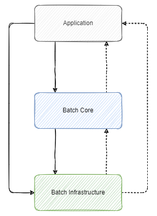
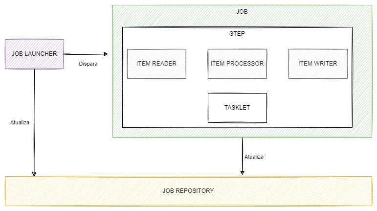
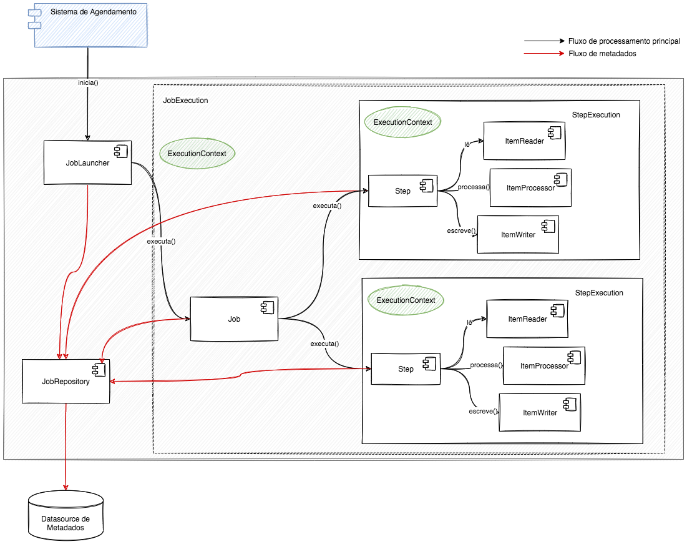

Spring Batch
O Spring Batch é um framework open source para processamento em lote (batch processing) desenvolvido em Java. Ele foi criado pela SpringSource (hoje parte da VMware), com contribuições iniciais da Accenture. O framework é amplamente utilizado em sistemas corporativos que precisam processar grandes volumes de dados de forma robusta, confiável e escalável.
Versão Vigente
A versão 5 do Spring Batch é atualmente a versão recomendada para novos projetos por oferecer uma base moderna, segura e alinhada aos padrões atuais da plataforma Java. Suas principais vantagens incluem:
- Compatibilidade com Java 17+ e Jakarta EE 9+: alinhada com os padrões do ecossistema Spring moderno.
- Melhorias de desempenho e modularização: código mais limpo, melhor separação de responsabilidades e suporte aprimorado a paralelismo e particionamento.
- Manutenção ativa e suporte da comunidade: atualizações regulares de segurança, correções de bugs e novas funcionalidades.
- Integração facilitada com Spring Boot 3.x: simplifica configuração, empacotamento e execução dos jobs.
💡 Recomendação: todos os novos projetos devem ser iniciados com Spring Batch 5. Projetos legados em versões anteriores devem avaliar a migração gradativa, especialmente se estiverem adotando Java 17 ou superior.
Principais Características
O Spring Batch 5 incorpora diversas melhorias, incluindo suporte a Java 17+, atualização do JobRepository com Jakarta Persistence, e melhorias de desempenho e modularização.
A seguir, estão suas principais características:
- Injeção de Dependências: Utiliza o mecanismo padrão do Spring para configuração modular e manutenção facilitada.
- Segurança: Integra-se com o Spring Security para proteger jobs e recursos sensíveis.
- Logging Avançado: Permite rastreamento detalhado de jobs e steps.
- Transações Declarativas: Suporte robusto ao controle transacional via
PlatformTransactionManager. - Testabilidade: Oferece utilitários como
JobLauncherTestUtilseJobRepositoryTestUtilspara testes automatizados. - Suporte ao Spring Boot: Fácil configuração e execução de jobs usando autoconfiguração.
- Componentes Reutilizáveis: Leitores, processadores e escritores podem ser reaproveitados entre diferentes jobs.
- Programação Declarativa: Configuração de jobs baseada em DSL Java ou XML.
- Leitura e Escrita Flexível: Suporte a arquivos, bancos de dados, filas e APIs.
- Escalabilidade: Suporte nativo a particionamento, multithreading e chunk processing.
- Tratamento de Erros e Retry: Estratégias configuráveis de falha, skip e retry para steps.
Benefícios para o Desenvolvimento
- Abstração de infraestrutura: Desenvolvedores focam apenas na lógica de negócio.
- Alta produtividade: Reduz o tempo de desenvolvimento de jobs complexos.
- Qualidade de software: Integração com testes automatizados e práticas modernas.
- Manutenibilidade: Código modular e bem estruturado.
- Comunidade ativa: Suporte contínuo da comunidade Spring e atualizações frequentes.
Arquitetura do Spring Batch

A arquitetura do Spring Batch é dividida em três camadas principais:
1. Camada de Aplicação
- Responsável por definir os Jobs, Steps, Readers, Processors, e Writers.
- Toda lógica de negócios é definida aqui.
- Reúne componentes reutilizáveis e configurações de fluxo de execução.
2. Camada de Core Batch
- Inclui o núcleo do framework:
Job,Step,JobLauncher,JobRepository. - Gerencia ciclo de vida dos jobs e steps.
- Coordena transações e controle de execução.
- Componente essencial:
JobRepository, agora com suporte aJakarta Persistence.
3. Camada de Infraestrutura
- Disponibiliza utilitários como:
- Leitores:
JdbcCursorItemReader,FlatFileItemReader,JpaPagingItemReader. - Gravadores:
JdbcBatchItemWriter,FlatFileItemWriter,JpaItemWriter. - Transações:
PlatformTransactionManager, suporte a múltiplas fontes de dados. - Permite extensões com componentes personalizados.
Diagrama de Componentes

O diagrama acima mostra os principais componentes da arquitetura do Spring Batch, incluindo:
- JobLauncher
- JobRepository
- Step
- ItemReader / ItemProcessor / ItemWriter
- Listeners / Hooks
Fluxo de Execução

- O job é acionado via
JobLauncherou uma ferramenta externa como Control-M. - O
Jobé iniciado, seus parâmetros são resolvidos e o controle é passado para osSteps. - Cada
Steprealiza leitura (ItemReader), processamento (ItemProcessor) e gravação (ItemWriter). - O
JobRepositorymantém os estados para permitir reinício e recuperação de falhas. - Ao final, o status e os dados de execução são persistidos e disponibilizados para monitoramento.
Arquitetura de Referência
A arquitetura de referência apresentada a seguir é baseada em uma abordagem modular com jobs independentes, cada um implementado como uma aplicação Spring Boot. Essa estrutura favorece a escalabilidade, manutenção e execução paralela dos jobs.
Control-M
O Control-M é usado como orquestrador e agendador dos jobs em lote. Sua função principal é iniciar os jobs nos horários programados ou em resposta a eventos externos.
Principais funções do Control-M: - Agendamento cronológico de execuções. - Dependência entre jobs. - Monitoramento e reexecução em caso de falhas. - Notificações por e-mail ou logs em dashboards.
Jobs Spring Batch
Cada job é uma aplicação Spring Boot independente que contém:
- Sua própria definição de
Job,Step,Reader,ProcessoreWriter. - Dependências isoladas e parametrização por linha de comando.
- Estratégias específicas de erro, log e monitoração.
Benefícios: - Independência de deploy. - Escalabilidade horizontal. - Melhor organização do código por domínio de negócio.
JobLauncher
O JobLauncher é o ponto de entrada da execução de um job Spring Batch. Ele pode ser acionado:
- Via linha de comando.
- Por ferramentas de orquestração (ex: Control-M).
- Por agendadores internos do Spring (ex:
@Scheduled).
Cada execução pode ser parametrizada com JobParameters, garantindo controle e rastreabilidade.
JobRepository
Cada job possui seu próprio JobRepository, responsável por:
- Persistência de metadados da execução.
- Controle de status (COMPLETED, FAILED, STARTED etc).
- Suporte a retomada de jobs em caso de falha.
Novidade no Spring Batch 5:
É possível usar Jakarta Persistence para persistência dos metadados, além do tradicional JdbcJobRepository.
Fontes e Destinos de Dados
Fonte de Dados
É a origem das informações que serão processadas, como:
- Bancos de dados relacionais (PostgreSQL, Oracle, MySQL, etc.)
- Arquivos (CSV, XML, JSON)
- APIs REST
- Mensagerias (Kafka, RabbitMQ)
A leitura é feita com componentes como:
JdbcPagingItemReaderFlatFileItemReaderStaxEventItemReader- Leitores customizados (
ItemReader<T>)
Destino de Dados
O destino pode ser qualquer mecanismo compatível com escrita estruturada, como:
- Tabelas em bancos de dados
- Arquivos
- Sistemas externos via API
A gravação é feita com:
JdbcBatchItemWriterFlatFileItemWriterJpaItemWriter- Escritores customizados (
ItemWriter<T>)
Listeners e Hooks
O Spring Batch permite a adição de lógica personalizada em pontos específicos da execução:
JobExecutionListener: antes/depois do job.StepExecutionListener: antes/depois do step.ChunkListener,ItemReadListener,ItemProcessListener,ItemWriteListener: antes/depois de leitura, processamento e gravação.
Esses ganchos ajudam em:
- Validação de pré-condições.
- Log de métricas e eventos.
- Integração com sistemas externos.
Metadados de Execução
Por ser uma máquina de estados, o Spring Batch depende fortemente de metadados para:
- Controle do fluxo de execução.
- Registro de falhas e reinícios.
- Persistência de histórico para auditoria e monitoração.
Tipos de armazenamento:
- Em memória: volátil, recomendado apenas para testes.
- Em banco de dados relacional: persistente e recomendado para produção.
⚠️ A partir do Spring Batch 5, a camada de persistência foi atualizada para
Jakarta Persistence (JPA)em vez da APIjavax.
Nota sobre segregação de bases
É possível separar a base de dados de aplicação da de metadados. No entanto, é necessário usar JTA para garantir transações distribuídas. Essa abordagem traz complexidade e deve ser adotada com cuidado.
Fluxo de Execução
Abaixo, o fluxo típico de execução de um job Spring Batch orquestrado pelo Control-M:
- O Control-M agenda e aciona a aplicação Spring Batch via linha de comando ou script.
- O
JobLauncherinicia o job com parâmetros definidos (ex: data de processamento). - O job executa seus
Steps, que por sua vez executam leitura (ItemReader), processamento (ItemProcessor) e escrita (ItemWriter). - O
JobRepositoryregistra o progresso da execução, incluindo falhas, sucessos e métricas. - Ao final da execução, um exit code é retornado ao Control-M, sinalizando o status da operação.
Exemplo de Entrypoint (CommandLineRunner)
@SpringBootApplication
public class SpringBatchControlMApplication implements CommandLineRunner {
@Autowired
private JobLauncher jobLauncher;
@Autowired
private Job job;
public static void main(String[] args) {
System.exit(
SpringApplication.exit(
SpringApplication.run(SpringBatchControlMApplication.class, args)
)
);
}
@Override
public void run(String... args) throws Exception {
Map<String, JobParameter> parametersMap = new HashMap<>();
parametersMap.put("dataProcessamento",
new JobParameter(LocalDate.parse(args[0], DateTimeFormatter.ofPattern("d/MM/yyyy"))));
JobParameters parameters = new JobParameters(parametersMap);
jobLauncher.run(job, parameters);
}
}
@Bean
ExitCodeExceptionMapper exitCodeToExceptionMapper() {
return exception -> {
if (exception.getCause() instanceof ErroNegocioException) {
return 1;
}
return 99;
};
}
Melhores Práticas
- Organização Modular dos Jobs: cada job deve ser independente, com configurações isoladas e lógica própria.
- Uso de Spring Boot: facilita configuração, empacotamento e deploy.
- Logging Estruturado: logar início/fim de execução, quantidade de itens lidos e gravados, e falhas.
- Monitoramento de Execução: integração com dashboards de observabilidade (ex: Elastic/Kibana, Prometheus/Grafana).
- Testes Automatizados: utilize @SpringBatchTest para validar jobs e steps de forma isolada.
- Tratamento de Erros: defina políticas claras de retry, skip e fallback.
- Segregação de Responsabilidades: separe leitores, processadores e escritores em classes independentes e testáveis.
- Validação e Pré-processamento: valide parâmetros e pré-condições antes da execução principal.
Execução em Containers
Apesar de tradicionalmente executado em servidores físicos ou VMs, é possível executar Spring Batch em containers Docker. Considerações:
- Use imagem base com Java 17+ (requisito do Spring Batch
- Configure via variáveis de ambiente os parâmetros dos jobs.
- Use ferramentas como Control-M Automation API para orquestrar containers diretamente.
- Configure volume compartilhado ou use APIs REST para transferência de arquivos.
ℹ️ Estudos internos estão em andamento para homologação completa do uso de Spring Batch em containers, especialmente com integração ao Control-M via agente local.
Metadados e Persistência
O Spring Batch exige armazenamento de metadados para gerenciar o estado das execuções. Esses dados incluem:
- Histórico de execução (
JobInstance,JobExecution,StepExecution) - Parâmetros de execução (
JobParameters) - Status de leitura/gravação (contadores, falhas, tempo)
Modelagem
A estrutura das tabelas de metadados encontra-se documentada em:
Persistência e Segregação
Por padrão, o Spring Batch utiliza a DataSource principal da aplicação para persistir metadados.
Caso seja necessário segregar a base de metadados da base de dados da aplicação:
- Deve-se utilizar a Java Transaction API (JTA).
- O uso de transações distribuídas exige cuidado com consistência.
- Metadados e dados da aplicação podem ficar dessincronizados em caso de falhas parciais.
⚠️ Por esse motivo, é recomendada a utilização de uma única base de dados para aplicação e metadados. Casos excepcionais devem ser avaliados pela SUART.
Projeto Quickstart
A SUART disponibiliza um repositório de projetos quickstart para facilitar a criação de novos jobs Spring Batch com base na arquitetura de referência.
O projeto quickstart inclui:
- Estrutura base com Spring Boot + Spring Batch
- Leitores e gravadores prontos (ex: CSV e JDBC)
- Exemplo de parametrização e controle por linha de comando
- Logging e tratamento de erros configurados
- Modelo para execução via Control-M
Repositório Quickstart
Todos os quickstarts são mantidos pela SUART e atualizados conforme novas versões do Spring Boot e Spring Batch são homologadas.
Histórico da Revisão
| Data | Versão | Descrição | Autor |
|---|---|---|---|
| 18/11/2021 | 1.0 | Criação do documento | SUART02 |
| 02/12/2021 | 1.1 | Inclusão do projeto Quickstart. | SUART02 |
| 06/10/2023 | 2.0 | Revisão geral | SUART02 |
| 13/02/2025 | 3.0 | Revisão geral - Atualização para SpringBatch 5 | SUART13 |